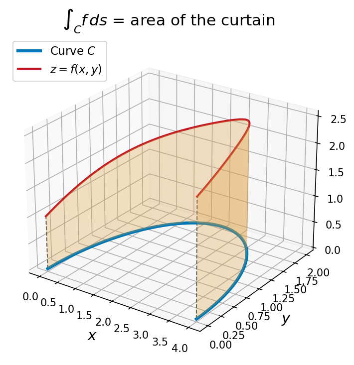

Section 16.2: Line Integrals
MTH 310 — Calculus III | Vector Calculus
Line Integrals: Integrating Along Curves
A line integral extends the definite integral from a straight interval \([a,b]\) to a curve \(C\) in 2D or 3D. Two types:
- Scalar: \(\int_C f\,ds\) — add up a function weighted by arc length (e.g., mass of a wire)
- Vector: \(\int_C \vec{F}\cdot d\vec{r}\) — add up a vector field along a curve (e.g., work done by a force)
The key ingredient from Chapter 13: the arc length element
\[ds = |\vec{r}'(t)|\,dt\]
converts everything to an ordinary integral over \([a,b]\).
Line Integral of a Scalar Function
Line Integral with Respect to Arc Length
\[\int_C f\,ds = \int_a^b f\bigl(\vec{r}(t)\bigr)\,|\vec{r}'(t)|\,dt\]
Geometric interpretation: For \(f > 0\), \(\int_C f\,ds\) is the area of the “curtain” standing on \(C\) reaching up to \(z = f(x,y)\).

The value does not depend on the parameterization — only on \(C\) and \(f\). (When \(C\) is a segment of the \(x\)-axis, this reduces to \(\int_a^b f(x)\,dx\).)
Example 1: Scalar Line Integral Along a Line Segment
Example 1
Evaluate \(\displaystyle\int_C x\sin y\,ds\), where \(C\) is the line segment from \((0,3)\) to \((4,6)\).
Parameterize: \(\vec{r}(t) = (1-t)\vec{r}_0 + t\vec{r}_1\) for \(t \in [0,1]\), then compute \(|\vec{r}'(t)|\) and set up the integral.
Parameterize: \(\vec{r}(t) = \langle 4t, 3+3t \rangle\), \(0 \leq t \leq 1\). So \(x = 4t\), \(y = 3 + 3t\).
Speed: \(\vec{r}'(t) = \langle 4, 3 \rangle\), \(|\vec{r}'(t)| = 5\).
Evaluate:
\[\int_C x\sin y\,ds = \int_0^1 (4t)\sin(3+3t)\cdot 5\,dt = 20\int_0^1 t\sin(3+3t)\,dt\]
Integration by parts (\(u = t\), \(dv = \sin(3+3t)\,dt\)):
\[= 20\left[-\frac{\cos 6}{3} + \frac{\sin 6 - \sin 3}{9}\right]\]
Line Integrals with Respect to \(x\) and \(y\)
Besides integrating with respect to arc length (\(ds\)), we can integrate with respect to \(x\) or \(y\) individually:
Line Integrals with Respect to \(x\) and \(y\)
\[\int_C f(x,y)\,dx = \int_a^b f\bigl(x(t),y(t)\bigr)\,x'(t)\,dt\]
\[\int_C f(x,y)\,dy = \int_a^b f\bigl(x(t),y(t)\bigr)\,y'(t)\,dt\]
Key difference from \(ds\): These use \(x'(t)\,dt\) or \(y'(t)\,dt\) instead of \(|\vec{r}'(t)|\,dt\).
- \(ds\) always involves \(|\vec{r}'(t)|\) — a magnitude, always positive
- \(dx\) and \(dy\) can be negative (they track direction)
These often appear together in the combined form:
\[\int_C P(x,y)\,dx + Q(x,y)\,dy = \int_C P\,dx + \int_C Q\,dy\]
This notation will become very important in Green's Theorem (Section 16.4).
Example 2: Line Integral Over a Piecewise Path
Example 2
Evaluate \(\displaystyle\int_C x^2\,dx + y^2\,dy\), where \(C\) consists of the arc of the circle \(x^2 + y^2 = 4\) from \((2,0)\) to \((0,2)\), followed by the line segment from \((0,2)\) to \((4,3)\).
Split \(C\) into \(C_1\) (circular arc) and \(C_2\) (line segment). Parameterize each piece separately, then add the integrals.
\(C_1\): Circular arc from \((2,0)\) to \((0,2)\). Parameterize: \(x = 2\cos t\), \(y = 2\sin t\), \(0 \leq t \leq \pi/2\).
\(dx = -2\sin t\,dt\), \(dy = 2\cos t\,dt\).
\[\int_{C_1} x^2\,dx + y^2\,dy = \int_0^{\pi/2}\bigl[(4\cos^2 t)(-2\sin t) + (4\sin^2 t)(2\cos t)\bigr]\,dt\]
\[= \int_0^{\pi/2}\bigl[-8\cos^2 t\sin t + 8\sin^2 t\cos t\bigr]\,dt\]
\[= \left[\frac{8\cos^3 t}{3} + \frac{8\sin^3 t}{3}\right]_0^{\pi/2} = \left(\frac{0 + 8}{3}\right) - \left(\frac{8 + 0}{3}\right) = 0\]
\(C_2\): Line segment from \((0,2)\) to \((4,3)\).
Parameterize: \(x = 4t\), \(y = 2 + t\), \(0 \leq t \leq 1\).
\(dx = 4\,dt\), \(dy = dt\).
\[\int_{C_2} x^2\,dx + y^2\,dy = \int_0^1\bigl[(16t^2)(4) + (2+t)^2(1)\bigr]\,dt\]
\[= \int_0^1\bigl[64t^2 + 4 + 4t + t^2\bigr]\,dt = \int_0^1\bigl[65t^2 + 4t + 4\bigr]\,dt\]
\[= \left[\frac{65t^3}{3} + 2t^2 + 4t\right]_0^1 = \frac{65}{3} + 2 + 4 = \frac{65}{3} + 6 = \frac{83}{3}\]
Example 3: Line Integral in 3D
Example 3
Evaluate \(\displaystyle\int_C y\,dx + z\,dy + x\,dz\), where \(C\) is the line segment from \((1,2,3)\) to \((-1,4,6)\).
Parameterize: start at \(\langle 1,2,3\rangle\), direction \(= \langle -1,4,6\rangle - \langle 1,2,3\rangle = \langle -2,2,3\rangle\).
Parameterize: \(\vec{r}(t) = \langle 1,2,3 \rangle + t\langle -2,2,3 \rangle = \langle 1-2t,\; 2+2t,\; 3+3t \rangle\), \(0 \leq t \leq 1\).
\(dx = -2\,dt\), \; \(dy = 2\,dt\), \; \(dz = 3\,dt\).
Substitute:
\[\int_C y\,dx + z\,dy + x\,dz = \int_0^1\bigl[(2+2t)(-2) + (3+3t)(2) + (1-2t)(3)\bigr]\,dt\]
\[= \int_0^1\bigl[-4-4t + 6+6t + 3-6t\bigr]\,dt = \int_0^1\bigl[5 - 4t\bigr]\,dt\]
\[= \left[5t - 2t^2\right]_0^1 = 5 - 2 = 3\]
Line Integral of a Vector Field (Work)
For a varying force along a curved path, work = \(\int_C (\text{force along path}) \cdot ds\).
Line Integral of a Vector Field
\[\int_C \vec{F}\cdot d\vec{r} = \int_a^b \vec{F}\bigl(\vec{r}(t)\bigr) \cdot \vec{r}'(t)\,dt\]
Three equivalent notations:
\[\int_C \vec{F}\cdot d\vec{r} = \int_C \vec{F}\cdot\vec{T}\,ds = \int_C P\,dx + Q\,dy + R\,dz\]
The connection: \(d\vec{r} = \vec{r}'(t)\,dt = \langle dx, dy, dz \rangle\), so \(\vec{F}\cdot d\vec{r} = P\,dx + Q\,dy + R\,dz\).
Quick Check: If \(\vec{F} = \langle 1+y, x \rangle\), then \(\int_C \vec{F}\cdot d\vec{r} = \int_C (1+y)\,dx + x\,dy\).
Example 4: Work Done by a Force
Example 4
Let \(\vec{F} = \langle 1+y,\; x \rangle\) and let \(C\) be the upper semicircle from \((-1,0)\) to \((1,0)\). Compute the work \(\displaystyle\int_C \vec{F}\cdot d\vec{r}\).
Parameterize the upper semicircle from \((-1,0)\) to \((1,0)\). Hint: try \(\vec{r}(t) = \langle -\cos t, \sin t \rangle\).
Parameterize: \(\vec{r}(t) = \langle -\cos t, \sin t \rangle\), \(0 \leq t \leq \pi\).
Check: \(\vec{r}(0) = (-1, 0)\), \(\vec{r}(\pi) = (1, 0)\) \(\checkmark\) \(\vec{r}'(t) = \langle \sin t, \cos t \rangle\).
Dot product: \(\vec{F}(\vec{r}(t)) = \langle 1 + \sin t,\; -\cos t \rangle\).
\[\vec{F}\cdot\vec{r}' = (1+\sin t)(\sin t) + (-\cos t)(\cos t) = \sin t + \sin^2 t - \cos^2 t = \sin t - \cos 2t\]
Integrate:
\[\int_0^{\pi}(\sin t - \cos 2t)\,dt = \left[-\cos t - \frac{\sin 2t}{2}\right]_0^{\pi} = (1 - 0) - (-1 - 0) = \boxed{2}\]
Properties of Line Integrals
Linearity:
\[\int_C (c_1\vec{F}_1 + c_2\vec{F}_2)\cdot d\vec{r} = c_1\int_C\vec{F}_1\cdot d\vec{r} + c_2\int_C\vec{F}_2\cdot d\vec{r}\]
Piecewise paths: \(C = C_1 \cup C_2 \cup \cdots \;\Rightarrow\; \int_C = \int_{C_1} + \int_{C_2} + \cdots\) (used in Example 2)
Reversing direction:
\[\int_{-C}\vec{F}\cdot d\vec{r} = -\int_C\vec{F}\cdot d\vec{r} \qquad\text{but}\qquad \int_{-C}f\,ds = \int_C f\,ds\]
Vector line integrals change sign; scalar line integrals don't (arc length has no direction).
Section 16.2 Summary
Scalar Line Integral
\(\displaystyle\int_C f\,ds = \int_a^b f(\vec{r}(t)) |\vec{r}'(t)|\,dt\). Adds up \(f\) weighted by arc length. Independent of parameterization and direction.
Vector Line Integral (Work)
\(\displaystyle\int_C\vec{F}\cdot d\vec{r} = \int_a^b\vec{F}(\vec{r}(t))\cdot\vec{r}'(t)\,dt\). Computes work done by \(\vec{F}\) along \(C\). Depends on direction.
Three Notations
\(\int_C\vec{F}\cdot d\vec{r} = \int_C\vec{F}\cdot\vec{T}\,ds = \int_C P\,dx + Q\,dy + R\,dz\). All equivalent.
Key Properties
Linearity, piecewise additivity, and direction reversal: \(\int_{-C}\vec{F}\cdot d\vec{r} = -\int_C\vec{F}\cdot d\vec{r}\).
Evaluation Strategy
(1) Parameterize \(C\) as \(\vec{r}(t)\). (2) Compute \(\vec{r}'(t)\). (3) Substitute and integrate over \([a,b]\).